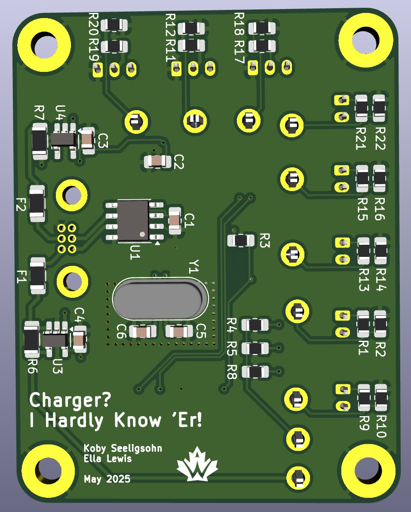
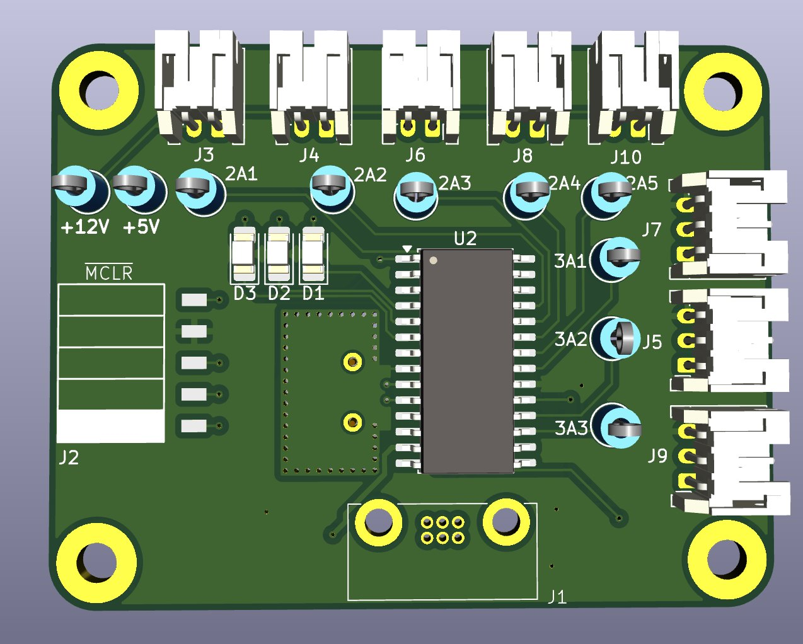

Injector Sensor Hub — Waterloo Rocketry
A two-layer flight board that aggregates six analog sensor feeds from around the rocket and reports them over CAN. Designed for a vibration-heavy, electrically noisy environment where you get exactly one shot at it working.
Role on the rocket
The hub sits between the rocket's injector sensors and the vehicle's CAN bus. Six analog sensor ports collect readings from other components; a Microchip PIC18F26K83 digitizes and packages them; the CAN transceiver puts them on the bus alongside every other node.
Power comes off the rocket's 12 V source and is stepped down on-board to 3V3 for IC communication and power-up, so the board needs only one supply input.
Design choices
| Stackup | 2-layer, specified for a robust mechanical environment |
| Clock | External crystal, isolated on the layout |
| Power | 12 V rocket bus stepped down to 3V3 on-board |
| Comms | CAN — differential, multi-drop, standard across the vehicle |
| Mounting | Four corner mounting holes sized for the airframe bracket |
The external crystal was isolated deliberately: clock integrity is the thing you least want compromised by switching noise on a shared board, and it costs almost nothing to keep it away from the noisy sections at layout time.
The board


Team context
Built as part of Waterloo Rocketry, co-designed with Koby Seeligsohn. Working inside a design team meant the board had to conform to conventions set by the rest of the avionics stack — connector choice, CAN addressing and mechanical footprint were not mine to pick unilaterally, which is a useful constraint to design under.